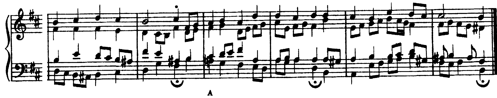

Due condotte che compromettono l’indipendenza delle voci: definizione, ragione percettiva, eccezioni in Bach, e il modo di evitarle in un basso con rivolti e settima di dominante.
Dovendo le voci muoversi, generalmente, nel loro ambito naturale, si devono evitare gli incroci.
Alfredo de Ninno, Trattato di Armonia, vol. 1, p. 97
A5Altre condotte particolari, Lezione 20, pp. 50–51
Incrocio, sovrapposizione e le relazioni nei cambi di posizione.
«Quando due voci adiacenti invertono la loro posizione reciproca, come accade, per esempio, se il tenore si sposta sopra la linea del contralto o il basso sopra la linea del tenore, si ha un incrocio delle parti». Si riconosce in un solo accordo.
D’Urso, Odone, Bertolini, 3° anno, p. 50; de Ninno, vol. 1, § 42, p. 97.
Si ha una sovrapposizione «quando due voci adiacenti mantengono la posizione reciproca ma una delle due, muovendosi, supera all’acuto o al grave la posizione precedente dell’altra». Si riconosce confrontando due accordi consecutivi.
D’Urso, Odone, Bertolini, 3° anno, p. 50.
L’orecchio segue le voci per altezza: percepisce come melodia principale la voce più acuta, qualunque sia il suo nome. Nell’incrocio la linea superiore percepita passa da una voce all’altra, e la nota della voce scavalcata scompare dentro l’accordo. Nel sorpasso le due voci restano in ordine, ma l’orecchio collega la nota appena lasciata da una voce alla nota d’arrivo dell’altra, «un’apparente successione melodica tra le due parti» (W. Piston, Armonia, p. 32). Nei due esempi le versioni corrette sono a portata di mano: nel primo il contralto scende al si e il tenore tiene il sol, nota comune; nel secondo le tre voci superiori salgono, contro il basso che scende di grado, come vuole il terzo caso di concatenazione.
BWV 305, b. 11: il tenore sale per crome do–re–mi–fa–sol e negli ultimi due movimenti passa sopra il contralto (do–re), mentre il soprano sale la–si. È l’unico incrocio del corale (conteggio sulla partitura del corpus music21).
Confondere le due condotte, o cercarle solo fra soprano e contralto. Il sorpasso più frequente nei compiti è fra tenore e basso: il basso sale di quarta o di quinta e supera la nota che il tenore aveva un attimo prima.
L’incrocio è un procedimento «sempre dettato da ragioni di condotta melodica», più frequente «tra le parti interne»; «nelle esercitazioni scolastiche è bene evitare sempre l’incrocio delle parti» (D’Urso, Odone, Bertolini, 3° anno, p. 50). De Ninno tollera eccezioni «quando il far questo sia giustificato dal desiderio di ricercare una migliore cantabilità delle voci» (vol. 1, p. 97).

Alla b. 8 il contralto scende per grado re–do♯–si e per due movimenti sta sotto il tenore, che tiene fa♯ e mi; sul terzo movimento, alla corona sul V, il contralto torna sopra con un salto di quinta (si–fa♯) e il tenore scende alla sensibile la♯. Alla b. 9 il contralto sale per grado re–mi–fa♯–sol e per un movimento resta sotto il fa♯ del tenore. In entrambi i casi l’incrocio nasce da una linea per grado del contralto, che Bach non spezza, dura un movimento o due, ed è fra due voci di timbro diverso: sono le condizioni di de Ninno.
Alla b. 11 il basso sale per grado, mi–fa♯–sol–la–si, verso la cadenza della b. 12; il tenore scende al sol♯ e per una croma il basso è sopra di lui. Anche qui la ragione è la linea: la scala del basso arriva fino in fondo.
Usare l’incrocio per comodità, per evitare un salto o raggiungere una nota dell’accordo. In Bach l’incrocio ha sempre una linea da difendere; nel compito scolastico non si scrive, e un incrocio nell’ultima battuta non rientra in nessuna eccezione.
«Quando due voci salgono per moto retto, la voce più grave non dovrebbe andare a una posizione più alta di quella appena lasciata dalla voce più acuta. [...] Per il movimento discendente vale la regola inversa» (W. Piston, Armonia, p. 32). Incroci e sorpassi si prevengono guardando l’accordo dopo: dove il basso sale di salto verso la zona del tenore, il tenore deve essere già sopra la nota d’arrivo del basso; dove il soprano scende di salto, il contralto deve essere già sotto.
1. Incroci: per ciascun accordo si leggono le quattro altezze dall’alto; devono succedersi soprano, contralto, tenore, basso.
2. Sorpassi: per ciascun collegamento si confrontano le tre coppie adiacenti (S/C, C/T, T/B): nessuna voce deve superare la nota precedente della voce vicina. Il punto critico è T/B quando il basso sale di quarta o di quinta, e S/C quando il soprano scende di salto.
BWV 326, b. 2: il basso sale per crome mi♭–fa–sol–la–si♭ e sul terzo movimento arriva al si♭ che il tenore tiene da inizio battuta: l’unisono, e non oltre. Poi scende al la.
Scegliere sempre la nota più vicina senza guardare dove arriva il basso. Se il basso va da re a sol (I–IV) e nel I il tenore è sul fa♯ della stessa ottava, la nota più vicina dell’accordo nuovo è il sol, all’unisono con il basso, e il re sotto di sé lo farebbe incrociare. Il tenore deve stare più in alto già nel I: nell’esempio tiene il re dell’ottava sopra, nota comune.
Cinque affermazioni. Per ogni risposta indicare la slide che la giustifica.
Incrocio: in un accordo due voci adiacenti sono in ordine inverso. Sorpasso (sovrapposizione): nel collegamento una voce supera la nota appena lasciata dalla voce adiacente.
Nelle esercitazioni si evitano entrambi, perché l’orecchio segue le voci per altezza. Si prevengono guardando avanti: dove il basso sale o il soprano scende di salto, la voce vicina deve essere già al riparo. In Bach gli incroci sono brevi, fra parti interne, e difendono una linea.
Per casa, un basso senza numeri di dodici battute in sol minore, nella forma della V1. L’ora si chiude con il solfeggio parlato, cantato e ritmico, in fondo alla pagina. Lezione 5, di percezione: intonare una voce mentre le altre suonano.
Compiti per la prossima volta
Realizzare a quattro parti il basso senza numeri qui sotto (sol minore, 4/4, dodici battute), due voci per rigo con i gambi opposti. Prima di scrivere, sotto ogni nota grado e stato dell’accordo.
Il basso chiede i primi rivolti, un iv64 di volta sulla tonica tenuta (b. 5), un V64 di passaggio (b. 6), i64–V7 sulla dominante tenuta (b. 11) e un secondo V7 alla b. 4. Alla b. 8 il basso sale di quarta nella zona del tenore: decidere prima dove sta il tenore. Alla fine le due verifiche: incroci accordo per accordo, sorpassi collegamento per collegamento; poi il controllo a sei passaggi.
Sul quaderno, a matita. La foto del lavoro finito va su Classroom. Nel Workbook: apri l’esercizio 2.5 ↗
Compiti per la prossima volta
n. 88 e n. 89 parlato · n. 90 e n. 91 cantato · n. 92 e n. 93 ritmico
Ogni pezzo a tempo, senza fermarti: il parlato a nomi, il cantato prendendo il primo suono dalla tastiera, il ritmico battendo la pulsazione.
Scrivi la linea del basso sul quaderno, in chiave di basso: otto battute in 2/4, fa maggiore. Il primo suono è do. Prima il riferimento, poi tutto due volte, ogni coppia di battute due volte, il collegamento 1–4, 3–6 e 5–8, e tutto per controllare.
Il riferimento: accordo di tonica e primo suono
Il dettato · otto battute
Le sezioni (riferimento, tutto, le coppie, il collegamento) si ascoltano una per una e si ripetono quanto serve; le fasi fanno la procedura della classe, con gli annunci e le pause, da qualunque punto.
Sul quaderno scrivi in testa la sigla C3-D-U02-L4. Si corregge all’inizio della prossima lezione.
Compiti per la prossima volta
Scrivi un contrappunto di prima specie (nota contro nota) sopra il canto fermo, in modo misolidio (finale sol): nove battute. Comincia su una consonanza perfetta, alla cadenza la sensibile sale alla finale, niente quinte e ottave consecutive.
Sul quaderno, con la sigla C3-CP-U02-L4 in testa; la foto va su Classroom.
Realizza a quattro parti il basso senza numeri: otto battute in 4/4, re minore. Trova tu l’accordo di ogni nota (la regola dell’ottava è il punto di partenza) e scrivilo sotto; poi il soprano, poi le voci interne. Accordi che puoi usare: I, IV e V, allo stato fondamentale e in primo rivolto.
Sul quaderno, con la sigla C3-BD-U02-L4 in testa; la foto va su Classroom.
Armonizza a quattro parti il canto dato: otto battute in 4/4, si♭ maggiore. Prima le cadenze, poi il basso per intero, e solo alla fine contralto e tenore. Accordi che puoi usare: I, IV e V, allo stato fondamentale e in primo rivolto.
Sul quaderno, con la sigla C3-CD-U02-L4 in testa; la foto va su Classroom.
Scritto: Dodici battute in sol minore, senza incroci né sorpassi (Workbook, esercizio 2.5), sul quaderno; la foto va su Classroom. Solfeggio dal quaderno di lettura: parlato n. 88, 89; cantato n. 90, 91; ritmico n. 92, 93 (a tempo, senza fermarsi). Dettato C3-D-U02-L4 dalla pagina della lezione (sezioni da ascoltare, o le fasi della procedura guidata), sul quaderno con la sigla. Contrappunto di prima specie sul canto fermo (C3-CP-U02-L4). Basso senza numeri da realizzare a quattro parti (C3-BD-U02-L4). Canto dato da armonizzare a quattro parti (C3-CD-U02-L4).
In classe
A nomi, a tempo, con la mano che batte. Chi si ferma riparte dalla battuta dopo.
Apri il n. 84 nel quaderno di lettura ↗ chiave di contralto · 4/4
In classe
Si prende il tono dalla tastiera, si canta insieme; poi a gruppi.
Apri il n. 85 nel quaderno di lettura ↗ chiave di violino · 4/4 · fa maggiore
Apri il n. 86 nel quaderno di lettura ↗ chiave di violino · 3/4 · fa maggiore
In classe
Tutti insieme, battendo la pulsazione. Poi a file, due battute a testa.